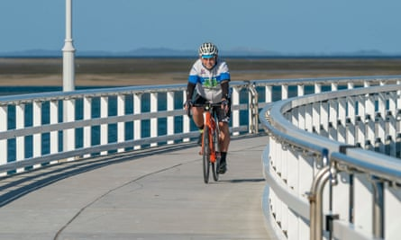
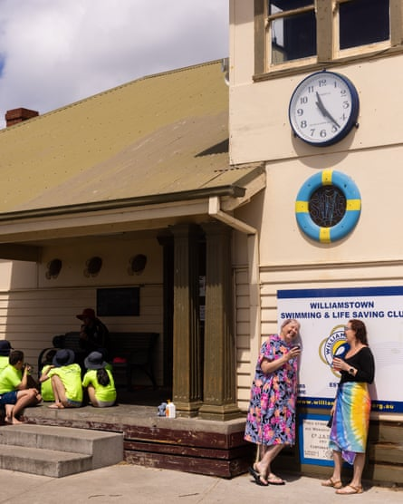

S eventy-year-old Anne Young was unequivocal when asked what she wanted for her milestone birthday in April this year. “A wetsuit.” Young started swimming to recover from an injury a few months before and had no intention of missing her weekly swims in the icy waters of Melbourne’s Port Phillip Bay just because of winter. “Are you sure?” they asked her. “Why not?” she countered.
“So, I got the wetsuit, got the gloves, got the booties and then I got the giggles, as I couldn’t get the wetsuit on. Then I couldn’t get the zip up. When I went for the swim, I couldn’t get it down.” She needed help. “One day I went to one of the girls and a man said, ‘Here, let me’.” Young leans forward and laughs. “So, at 70, you can still get undressed by a strange man.”
In time, she learned to master it without help. Her new goal is to learn to swim properly. Family members can’t see the point at her age. “Why bother,” they tell her. “It’s a waste of time.” Undeterred, she’s enrolled in lessons at the local lifesaving club.

Anne Young and her fellow Silver Salties heading out for their weekly bay swim at Williamstown beach, Melbourne.Photograph: Abigail Varney/Oculi
Some experts think we’re on the precipice of an age liberation movement, with people such as Young re-imagining what life can be like in our later years. It’s a phrase coined by Dr Becca Levy, a professor of public health and psychology at Yale, in her book Breaking the Age Code , released earlier this year.
An age liberation movement?
The term is rooted in the idea of freeing ourselves from negative age beliefs and stereotypes. Levy’s research suggests that having more positive ageing expectations can add an average of 7.5 years to your life. Identifying the true perpetrators of ageism is the next step – such as industries that profit from promoting ageing as something to fear or avoid. The final step is to challenge and confront ageism, whether that be with family members, friends or through campaigning.
Dr Natasha Ginnivan, research fellow at UNSW’s Ageing Futures Institute, agrees that we are on the cusp of an age liberation movement. She points to the emergence of groups such as the Modern Elder Academy (MEAx) and Silver Sirens as vanguards of the movement.
MEAx run events and workshops to help people navigate midlife transitions and reframe their mindset on ageing. Silver Sirens promote positive ageing for women over 50 through community events and an annual conference.
Ginnivan says she can see a rethinking of ageing and age stereotypes. “ But on the other hand, there’s more resistance to it because we still like to rely on mental shortcuts about what different age groups mean, like what working age means, what retirement age means.” These mental shortcuts seep into our decision-making, such as the commonly held belief that you’ll retire by 65.
Gregor (Gus) Garnsworthy, aged 72, is revising his age beliefs with each passing year. Regularly cycling 100km to 200km a week, more when he can fit it in, he doesn’t feel old, although he’s had to come to terms with not being first across the line like he used to. “I don’t know if there is a particular age at which you reach old age,” he says.
Gus Garnsworthy cycles 100km to 200km a week despite being in his 70s. Pictured in Gippsland, Victoria.Photograph: Mark Griffin
Lately, however, his family has become concerned about his cycling. “Should you still be doing this?” his daughter asks. It reminds Garnsworthy of what he said to his own father, who played squash well into his 60s, a decade younger than he himself is now. “I told him, ‘You’re old, you can’t be doing that.’”
Garnsworthy now realises his mistake. “That was the wrong thing to do.” He has no plans to hang up his wheels anytime soon and has signed up to cycle 1,000km over a week in March in the new year.
A 2021 report by the Australian Human Rights Commission, What’s age got to do with it? A snapshot of ageism across the Australian lifespan , identified the prevailing stereotypes, attitudes and beliefs about age in Australia. The dominant perception of older people, those aged 62 years and above, was “nice, likable, warm and good listeners [but with] declining skills, agency and vitality, [lacking] competence in many areas, such as with technology or professionally.”
“Ouch!” says Sylvianne Quin-Wright on hearing this. At 62, Quin-Wright does not see herself in that description and is quick to counter the perception. “Science is helping us to become fitter, to become healthier, to keep our minds active. You can teach an old dog new tricks to stay vital, to stay worthwhile and be of value.” Asked whether she thinks the age liberation movement has momentum. “Absolutely.”
Rethinking the three-stage life plan
Dr Catherine Rickwood, age diversity consultant and advocate, is worried that the perception of people in their 60s and 70s, by both them and others, is still “informed by a retirement age that was established at the end of the 1800s.” At the time of enacting the first national old age pension in 1908 , life expectancy for males was 55 years, females 59 years, and a little over 4% of Australians reached the national pension eligibility age of 65 (or 60 for women).
Today, the life expectancy of Australians is 81 years for males, 85 years for females. While last year the age for pension eligibility was revised upward to 67, currently 16% of the population is aged 65 and over and by 2050, it is estimated this figure will be 25%. That’s a lot of people in retirement.
Rickwood isn’t anti-retirement. “For some, retirement is that perfect place at 60 or 65.” For her, the key to age liberation is rethinking our three-stage life plan of education, working and retirement. “How might I do my life differently?”
Quin-Wright is the perfect example. “I don’t want to ever retire.” She turned her back on a successful IT career seven years ago to enrol in a Bachelor of Arts degree. She’s on her way towards graduating with honours, majoring in archaeology and anthropology. In her spare time, she volunteers with the Australian Coast Guard. The skills and qualifications she’s gaining are a key part of her plan to re-enter the workforce with a new career in maritime archaeology.
Silver Salties Anne Young and Ray Varone enjoy a hot cup of tea/coffee after their swim at the Williamstown Swimming & Lifesaving Club, Melbourne.Photograph: Abigail Varney/Oculi
Anne Young understands that retiring to sit in a chair and read a book may seem an attractive option, but it’s not for her. “That would bore me out of my head.” In her 70 th year, she is relaunching herself as an end-of-life celebrant. “And I’ve got business cards,” she says.
For Ginnivan, momentum towards a rethinking of what ageing means is strong. “If you ask me if it’s going to get better, then my answer is absolutely yes,” she says. “There’s no turning back.”